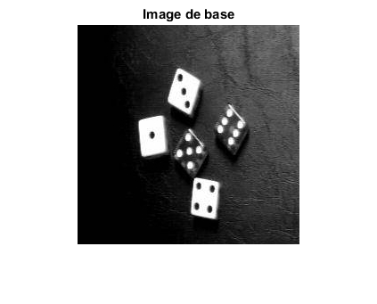
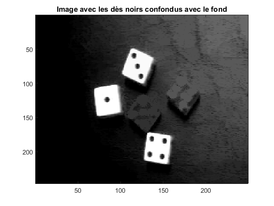

clear all; close all; % Affichage de l'image de base en niveaux de gris I=imread('des.jpg'); colormap('gray'); figure(1); imshow(I); title('Image de base'); mark=strel('disk',8); %Marqueur en forme de disque de taille 8 Erod=imerode(I,mark); %Erosion de I avec mark Dila=imdilate(Erod,mark); %Dilatation de l'erodée avec mark (ouverture) %Dila=min(Dila,I); mark2=[0,1,0;1,1,1;0,1,0]; %Marqueur en forme de croix %Reconstruction par ouverture des dés blancs while ~isequal(Dila,Erod) Erod=Dila; Dila=imdilate(Erod,mark2); Dila=min(Dila,I); end % Affichage de l'image avec les dés noirs confondus avec le fond figure(2) imagesc(Dila); title('Image avec les dés noirs confondus avec le fond'); colormap('gray'); %Affichage en niveaux de gris 